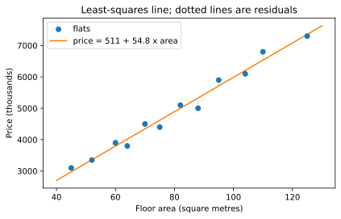
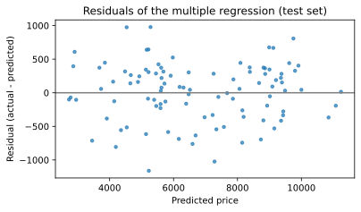
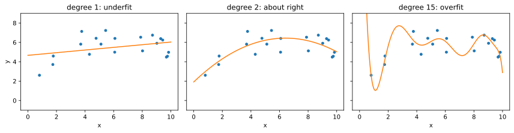

Chapter 8: Regression¶
Predicting a number: straight lines, many features, curves and regularisation
Learning outcomes
After this chapter you should be able to:
- state the regression problem in terms of features, a target and a loss;
- fit a simple linear regression by least squares, by formula and with scikit-learn, and interpret its slope and intercept;
- measure fit and prediction error with residuals, MAE, RMSE and \(R^2\);
- use scikit-learn's
fit/predictinterface with a train/test split and a baseline; - fit a multiple regression, including categorical features through one-hot encoding;
- model curved relationships with polynomial features, and recognise overfitting;
- explain what ridge and lasso regularisation do and when to use them.
So far we have described and compared data. From this chapter on we also predict. In regression the thing to be predicted, the target, is a number: the price of a house, the demand for electricity tomorrow, the time a delivery will take. The information used to predict it, the features, can be numbers or categories. A regression model is a rule that turns features into a predicted target, learned from examples where both are known. This is supervised learning: the examples supervise the learning by supplying the right answers.
import numpy as np
import pandas as pd
import matplotlib.pyplot as plt
8.1 The regression problem¶
We write the features of one example as \(x\) (a single number, or a vector of several), the true target as \(y\), and the model's prediction as \(\hat{y}\) ("y hat"). The difference \(y - \hat{y}\) is the residual, or error, for that example. A good model makes the residuals small on examples it has not seen.
"Small" needs a definition, called the loss. The most common choice in regression is the squared error \((y - \hat{y})^2\), averaged over the examples:
Squaring makes all errors positive and punishes large errors much more than small ones. Its square root, the root mean squared error (RMSE), is in the same units as the target. The mean absolute error (MAE), \(\frac{1}{n}\sum |y_i - \hat{y}_i|\), is easier to explain ("on average the prediction is off by 12 thousand") and less dominated by a few large errors.
8.2 Simple linear regression¶
With one feature, the simplest model is a straight line:
where \(b_0\) is the intercept (the prediction when \(x = 0\)) and \(b_1\) the slope (the change in prediction for each one-unit increase in \(x\)). Least squares chooses the \(b_0\) and \(b_1\) that make the sum of squared residuals as small as possible. Calculus gives the answer in closed form:
The slope is the covariance of \(x\) and \(y\) divided by the variance of \(x\); equivalently \(b_1 = r\,s_y/s_x\), where \(r\) is the correlation of Section 6.6. The line always passes through the point of means \((\bar{x}, \bar{y})\).
Here is a small dataset: the floor area and price of twelve flats in one neighbourhood (price in thousands of a currency unit).
area = np.array([45, 52, 60, 64, 70, 75, 82, 88, 95, 104, 110, 125]) # square metres
price = np.array([3100, 3350, 3900, 3800, 4500, 4400, 5100, 5000, 5900, 6100, 6800, 7300])
xbar, ybar = area.mean(), price.mean()
b1 = np.sum((area - xbar) * (price - ybar)) / np.sum((area - xbar) ** 2)
b0 = ybar - b1 * xbar
print(f"slope b1 = {b1:.2f}, intercept b0 = {b0:.1f}")
pred = b0 + b1 * area
resid = price - pred
print("residuals:", resid.round(0))
print(f"sum of residuals = {resid.sum():.6f}")
slope b1 = 54.77, intercept b0 = 510.6
residuals: [ 125. -8. 103. -216. 156. -218. 99. -330. 187. -106. 265. -56.]
sum of residuals = 0.000000
The slope says that, among these flats, each extra square metre goes with about 54 thousand more in price. The intercept is the line's value at zero area; it is needed to place the line but has no sensible meaning by itself, because no flat has zero area. Least-squares residuals always add up to zero (up to rounding): the line is balanced among the points.
fig, ax = plt.subplots(figsize=(6.5, 3.8))
ax.scatter(area, price, zorder=3, label="flats")
xs = np.array([40, 130])
ax.plot(xs, b0 + b1 * xs, color="tab:orange", label=f"price = {b0:.0f} + {b1:.1f} x area")
for x, y, p in zip(area, price, pred):
ax.plot([x, x], [y, p], color="gray", linewidth=1, linestyle=":")
ax.set_xlabel("Floor area (square metres)")
ax.set_ylabel("Price (thousands)")
ax.set_title("Least-squares line; dotted lines are residuals")
ax.legend()
fig.savefig("regression-line.svg")

How good is the fit? R²¶
The coefficient of determination, \(R^2\), compares the model's squared error with that of the simplest possible prediction, the mean \(\bar{y}\) for everyone:
\(R^2 = 1\) means perfect predictions; \(R^2 = 0\) means no better than predicting the mean; on new data it can even be negative, meaning worse than the mean. For a simple linear regression on the data it was fitted to, \(R^2\) equals \(r^2\), the squared correlation.
ss_res = np.sum(resid ** 2)
ss_tot = np.sum((price - ybar) ** 2)
print(f"R^2 = {1 - ss_res / ss_tot:.4f}, r^2 = {np.corrcoef(area, price)[0, 1] ** 2:.4f}")
print(f"RMSE = {np.sqrt(np.mean(resid ** 2)):.1f}, MAE = {np.mean(np.abs(resid)):.1f}")
R^2 = 0.9810, r^2 = 0.9810
RMSE = 178.6, MAE = 155.8
Floor area explains about 98% of the variation in these prices, and a typical prediction is off by about 150 thousand. These are measures of fit on the same data the line was fitted to; Section 8.3 measures error on new data, which is what matters for prediction.
Caution: extrapolation
A fitted line describes the data in the range it came from. Predicting a 300-square-metre flat from data that stops at 125 assumes the straight line continues far beyond the evidence. Large flats may be priced quite differently. Be wary of any prediction outside the range of the training data.
8.3 Regression with scikit-learn¶
scikit-learn provides hundreds of models with one consistent interface. Every model is an object (an estimator) that is created with its settings, trained with fit(X, y), and used with predict(X). X is a two-dimensional table of features (one row per example, one column per feature) and y a one-dimensional array of targets.
from sklearn.linear_model import LinearRegression
X = area.reshape(-1, 1) # 12 rows, 1 feature column
model = LinearRegression()
model.fit(X, price)
print(model.intercept_.round(1), model.coef_.round(2))
print(model.predict(np.array([[50], [100]])).round(0))
print(round(model.score(X, price), 4)) # R^2
510.6 [54.77]
[3249. 5987.]
0.981
The results match the formulas. Fitted values are stored in attributes ending in an underscore (coef_, intercept_). score returns \(R^2\) for regressors.
Training data and test data¶
A model's error on the data it was trained on is optimistic: the model has adapted to those very examples, including their noise. To estimate how it will do on new cases, hold some data back. Split the data at random into a training set, used to fit the model, and a test set, used only to evaluate it. Chapter 10 develops this into cross-validation; for now a single split is enough.
To have enough data for a fair split we generate a larger, more realistic dataset of 400 houses with several features. As always, the generating rules are known to us but would not be in real life.
rng = np.random.default_rng(8)
n = 400
houses = pd.DataFrame({
"area": rng.uniform(40, 200, n).round(0),
"bedrooms": rng.integers(1, 6, n),
"age": rng.uniform(0, 50, n).round(0),
"location": rng.choice(["centre", "suburb", "outskirts"], n, p=[0.3, 0.45, 0.25]),
})
loc_effect = houses["location"].map({"centre": 1500, "suburb": 500, "outskirts": 0})
houses["price"] = (800 + 45 * houses["area"] + 150 * houses["bedrooms"] - 20 * houses["age"]
+ loc_effect + rng.normal(0, 400, n)).round(0)
print(houses.head())
print(houses.describe().round(1).loc[["mean", "std", "min", "max"]])
area bedrooms age location price
0 92.0 2 50.0 suburb 4295.0
1 198.0 1 42.0 suburb 9520.0
2 91.0 5 27.0 centre 5734.0
3 166.0 1 34.0 suburb 8077.0
4 179.0 5 30.0 outskirts 9348.0
area bedrooms age price
mean 119.4 2.9 24.4 6790.3
std 44.0 1.4 14.1 2122.7
min 41.0 1.0 0.0 2057.0
max 200.0 5.0 50.0 11272.0
from sklearn.model_selection import train_test_split
from sklearn.metrics import mean_absolute_error, root_mean_squared_error, r2_score
X = houses[["area"]]
y = houses["price"]
X_train, X_test, y_train, y_test = train_test_split(X, y, test_size=0.25, random_state=0)
print(len(X_train), "training rows,", len(X_test), "test rows")
simple = LinearRegression().fit(X_train, y_train)
pred = simple.predict(X_test)
print(f"test MAE = {mean_absolute_error(y_test, pred):.1f}")
print(f"test RMSE = {root_mean_squared_error(y_test, pred):.1f}")
print(f"test R^2 = {r2_score(y_test, pred):.3f}")
300 training rows, 100 test rows
test MAE = 643.7
test RMSE = 798.6
test R^2 = 0.866
random_state seeds the random split so that it is the same every time. The metrics come from sklearn.metrics, which always takes the true values first and the predictions second.
Always compare with a baseline¶
Is an MAE of several hundred good? It depends on how hard the problem is. A baseline answers that: the error of a trivial model that ignores the features, such as predicting the training mean for every house. scikit-learn's DummyRegressor does exactly this.
from sklearn.dummy import DummyRegressor
baseline = DummyRegressor(strategy="mean").fit(X_train, y_train)
print(f"baseline test MAE = {mean_absolute_error(y_test, baseline.predict(X_test)):.1f}")
print(f"baseline test R^2 = {r2_score(y_test, baseline.predict(X_test)):.3f}")
baseline test MAE = 1874.3
baseline test R^2 = -0.000
Floor area alone cuts the baseline error by a large factor. A model that cannot beat the baseline has learned nothing useful, however sophisticated it is.
8.4 Multiple regression¶
With several features \(x_1, \dots, x_p\) the linear model becomes
still fitted by least squares. Each coefficient \(b_j\) is now the change in prediction for a one-unit increase in \(x_j\) with the other features held fixed. That qualification matters: in the simple regression, the area coefficient also absorbed the effect of anything that goes with area, such as the number of bedrooms.
Categorical features: one-hot encoding¶
A model needs numbers, but location is text. One-hot encoding replaces a categorical column with one 0/1 column per category. To avoid redundancy (the columns would always add up to 1), one category is usually dropped and becomes the reference; each remaining coefficient is then the difference from the reference category.
encoded = pd.get_dummies(houses[["area", "bedrooms", "age", "location"]], columns=["location"],
drop_first=True, dtype=int)
print(encoded.head(3))
area bedrooms age location_outskirts location_suburb
0 92.0 2 50.0 0 1
1 198.0 1 42.0 0 1
2 91.0 5 27.0 0 0
With drop_first=True pandas drops the first category in alphabetical order, here centre, which becomes the reference. location_outskirts is 1 for houses on the outskirts and location_suburb is 1 for houses in the suburbs; a house in the centre has 0 in both. Checking the column names confirms it:
print(encoded.columns.tolist())
['area', 'bedrooms', 'age', 'location_outskirts', 'location_suburb']
Now fit the multiple regression on the same split:
X_all = encoded
X_train, X_test, y_train, y_test = train_test_split(X_all, y, test_size=0.25, random_state=0)
multi = LinearRegression().fit(X_train, y_train)
print(pd.Series(multi.coef_, index=X_all.columns).round(1))
print("intercept", round(multi.intercept_, 1))
pred = multi.predict(X_test)
print(f"test MAE = {mean_absolute_error(y_test, pred):.1f}, test R^2 = {r2_score(y_test, pred):.3f}")
area 44.7
bedrooms 159.2
age -20.9
location_outskirts -1450.3
location_suburb -924.9
dtype: float64
intercept 2286.3
test MAE = 344.4, test R^2 = 0.962
The coefficients recover the rules used to generate the data, within the noise: about 45 per square metre, 150 per bedroom, \(-20\) per year of age; houses on the outskirts about 1,500 cheaper and in the suburbs about 1,000 cheaper than comparable houses in the centre (the reference). The test error falls well below that of area alone.
Key idea
A coefficient in a multiple regression is a conditional effect: the difference in prediction for one unit of that feature among examples that are alike in all the other features in the model. Add or remove a feature and the other coefficients can change. And a coefficient describes the data, not necessarily a cause: in observational data, a feature may stand in for something unmeasured.
Residual plots¶
A plot of residuals against predicted values checks whether a straight-line model is adequate. If it is, the residuals form a shapeless band around zero. A curve suggests a missing non-linear term; a funnel shape suggests that the errors grow with the size of the prediction.
fig, ax = plt.subplots(figsize=(6, 3.2))
ax.scatter(pred, y_test - pred, s=12, alpha=0.7)
ax.axhline(0, color="gray")
ax.set_xlabel("Predicted price")
ax.set_ylabel("Residual (actual - predicted)")
ax.set_title("Residuals of the multiple regression (test set)")
fig.savefig("residuals.svg")

Here the residuals show no pattern, as expected, since the data was generated by a linear rule plus noise.
8.5 Curves: polynomial regression and overfitting¶
A straight line cannot follow a curved relationship. One way to fit curves while keeping the machinery of linear regression is to add powers of a feature as new features: \(x^2\), \(x^3\), and so on. The model \(\hat{y} = b_0 + b_1 x + b_2 x^2\) is still linear in the coefficients, so least squares fits it in exactly the same way.
scikit-learn's PolynomialFeatures creates the powers, and a pipeline chains it with the regression so that the steps behave as one model. A StandardScaler in between rescales the powers (Section 8.6 explains it); without it, numbers like \(10^{15}\) next to numbers like 1 make the computation numerically unreliable at high degrees.
from sklearn.preprocessing import PolynomialFeatures, StandardScaler
from sklearn.pipeline import make_pipeline
rng = np.random.default_rng(4)
x = np.sort(rng.uniform(0, 10, 20))
y_curve = 2 + 1.5 * x - 0.12 * x ** 2 + rng.normal(0, 0.8, 20) # a gentle curve plus noise
x_new = np.sort(rng.uniform(0, 10, 200)) # fresh data from the same source
y_new = 2 + 1.5 * x_new - 0.12 * x_new ** 2 + rng.normal(0, 0.8, 200)
for degree in [1, 2, 15]:
poly = make_pipeline(PolynomialFeatures(degree), StandardScaler(), LinearRegression())
poly.fit(x.reshape(-1, 1), y_curve)
train_rmse = root_mean_squared_error(y_curve, poly.predict(x.reshape(-1, 1)))
new_rmse = root_mean_squared_error(y_new, poly.predict(x_new.reshape(-1, 1)))
print(f"degree {degree:>2}: training RMSE {train_rmse:.3f}, new-data RMSE {new_rmse:.3f}")
degree 1: training RMSE 1.095, new-data RMSE 1.170
degree 2: training RMSE 0.763, new-data RMSE 0.851
degree 15: training RMSE 0.618, new-data RMSE 3.432
grid = np.linspace(0, 10, 400).reshape(-1, 1)
fig, axes = plt.subplots(1, 3, figsize=(12, 3.2), sharey=True)
for ax, degree, title in zip(axes, [1, 2, 15], ["underfit", "about right", "overfit"]):
poly = make_pipeline(PolynomialFeatures(degree), StandardScaler(), LinearRegression()).fit(x.reshape(-1, 1), y_curve)
ax.scatter(x, y_curve, s=15)
ax.plot(grid, poly.predict(grid), color="tab:orange")
ax.set_ylim(-1, 9)
ax.set_title(f"degree {degree}: {title}")
ax.set_xlabel("x")
axes[0].set_ylabel("y")
fig.tight_layout()
fig.savefig("polynomial-fits.svg")

The numbers and the picture tell the central story of all machine learning:
- The straight line underfits: it is too simple to capture the curve, so its error is high on both training and new data. This is bias.
- Degree 2 matches the true shape and has the lowest error on new data.
- Degree 15 overfits: it bends to follow the noise in the 20 training points, so its training error is the lowest of all, but on new data it does worse than degree 2, with wild swings near the edges. This is variance: the fit would change a lot with a different sample.
Caution: training error always falls as complexity rises
Adding features or flexibility can only lower the error on the training data, so training error cannot be used to choose a model's complexity. Use held-out data: a test set, or the cross-validation of Chapter 10.
8.6 Regularisation: ridge and lasso¶
Overfitting shows up as coefficients that are very large, balancing each other to chase the noise. Regularisation discourages this by adding a penalty on the size of the coefficients to the loss. Ridge regression minimises
and lasso regression uses \(\alpha \sum_j |b_j|\) instead. The hyperparameter \(\alpha \ge 0\) sets the strength of the penalty: \(\alpha = 0\) gives ordinary least squares, and a large \(\alpha\) shrinks the coefficients towards zero. The lasso can shrink some coefficients exactly to zero, effectively selecting features. (The intercept is not penalised.)
Because the penalty adds up the coefficients of different features, the features should be on comparable scales, so regularised models are almost always preceded by standardisation (Section 3.7), done by StandardScaler.
from sklearn.linear_model import Ridge, Lasso
for name, reg in [("plain", LinearRegression()), ("ridge", Ridge(alpha=1.0)), ("lasso", Lasso(alpha=0.01, max_iter=50_000))]:
pipe = make_pipeline(PolynomialFeatures(15), StandardScaler(), reg)
pipe.fit(x.reshape(-1, 1), y_curve)
coefs = pipe[-1].coef_
new_rmse = root_mean_squared_error(y_new, pipe.predict(x_new.reshape(-1, 1)))
print(f"{name:>5}: new-data RMSE {new_rmse:.3f}, largest |coef| {np.abs(coefs).max():10.1f}, "
f"zero coefs {np.sum(np.abs(coefs) < 1e-8)}")
plain: new-data RMSE 3.432, largest |coef| 14745.0, zero coefs 1
ridge: new-data RMSE 0.965, largest |coef| 1.2, zero coefs 1
lasso: new-data RMSE 0.902, largest |coef| 2.1, zero coefs 13
With the same degree-15 features, ridge and lasso keep the coefficients small and the error on new data comes back close to that of the well-chosen degree-2 model. The lasso has set most of the 16 coefficients to exactly zero, keeping only a few powers. (One coefficient is zero in every row: PolynomialFeatures adds a constant column of ones, which becomes a column of zeros after scaling and so gets no weight; the intercept does its job.) The right \(\alpha\) is found by trying several values on held-out data, which is the subject of Chapter 10.
8.7 Summary¶
Summary
- Regression predicts a numerical target from features, learned from examples (supervised learning). Residuals are actual minus predicted.
- Least squares minimises the sum of squared residuals. For one feature, \(b_1 = \sum (x_i - \bar{x})(y_i - \bar{y}) / \sum (x_i - \bar{x})^2\) and \(b_0 = \bar{y} - b_1\bar{x}\).
- MAE and RMSE measure error in the target's units; \(R^2\) compares the model with predicting the mean.
- scikit-learn estimators share
fit(X, y),predict(X)andscore; evaluate on a held-out test set and against aDummyRegressorbaseline. - In multiple regression each coefficient is an effect with the other features held fixed. Encode categories one-hot, dropping a reference category.
- Residual plots reveal curvature and changing spread.
- Polynomial features fit curves; too little flexibility underfits (bias), too much overfits (variance). Training error cannot choose the complexity.
- Ridge and lasso penalise large coefficients; standardise features first; lasso can zero out coefficients. Choose \(\alpha\) on held-out data.
8.8 Exercises¶
Exercise 1
For the points \((1, 2), (2, 3), (3, 5), (4, 6)\), compute the least-squares slope and intercept by hand, and check with NumPy.
Answer
\(\bar{x} = 2.5\), \(\bar{y} = 4\). The deviations of \(x\) are \(-1.5, -0.5, 0.5, 1.5\) and of \(y\) are \(-2, -1, 1, 2\). \(\sum (x - \bar{x})(y - \bar{y}) = 3 + 0.5 + 0.5 + 3 = 7\) and \(\sum (x - \bar{x})^2 = 2.25 + 0.25 + 0.25 + 2.25 = 5\). So \(b_1 = 7/5 = 1.4\) and \(b_0 = 4 - 1.4 \times 2.5 = 0.5\).
print(np.polyfit([1, 2, 3, 4], [2, 3, 5, 6], deg=1))
[1.4 0.5]
np.polyfit returns the coefficients from the highest power down: slope 1.4, intercept 0.5.
Exercise 2
A model has test \(R^2 = -0.15\). What does that mean?
Answer
On the test data the model's squared error is 15% larger than that of simply predicting the mean target for every example. It is worse than the trivial baseline, usually because it overfits the training data or because the test data differs from the training data.
Exercise 3
In the multiple regression on houses, the coefficient of bedrooms is about 150. A friend concludes, "adding a bedroom to a house raises its value by 150 thousand." What is right and what is wrong with that?
Answer
Right: among houses with the same area, age and location in this data, each extra bedroom goes with about 150 thousand more in predicted price. Wrong, or at least unsupported: this is an association in data, not the result of adding bedrooms to houses. Adding a bedroom without changing the area means making the other rooms smaller, which is not what the data compares. In this simulated data we built the effect in, but with real data a causal claim would need more than a regression coefficient.
Exercise 4
Fit a simple regression of price on age alone for the houses data, using the same split as Section 8.3 (test_size=0.25, random_state=0), and compare its test MAE with the baseline's.
Answer
Xa = houses[["age"]]
Xa_tr, Xa_te, ya_tr, ya_te = train_test_split(Xa, houses["price"], test_size=0.25, random_state=0)
age_model = LinearRegression().fit(Xa_tr, ya_tr)
print(round(age_model.coef_[0], 1))
print(round(mean_absolute_error(ya_te, age_model.predict(Xa_te)), 1))
print(round(mean_absolute_error(ya_te, DummyRegressor().fit(Xa_tr, ya_tr).predict(Xa_te)), 1))
-2.3
1868.0
1874.3
Age alone barely improves on the baseline. Its fitted slope, about \(-2\) per year, is also far from the \(-20\) per year that generated the data. Age's true effect (at most about 1,000 across the whole age range) is small compared with the variation in price driven by area, and when area is left out, that variation stays in the residuals and makes the age slope very imprecise. A feature can matter in a multiple regression and still be poorly estimated, and predict poorly, on its own.
Exercise 5
Why must features be standardised before ridge or lasso regression, but not before ordinary least squares?
Answer
Ordinary least squares gives the same predictions whatever the units of the features: rescaling a feature just rescales its coefficient. The ridge and lasso penalties add up the sizes of the coefficients, so a feature measured in small units (needing a large coefficient) would be penalised more than the same feature in large units. Standardising puts all features on the same scale so that the penalty treats them equally.
Exercise 6
Explain in your own words why the degree-15 polynomial has the lowest training error but not the lowest error on new data.
Answer
With 16 coefficients and only 20 points, the polynomial is flexible enough to bend towards each training point, fitting the random noise as well as the underlying curve. That lowers the training error, but the noise in new data is different, so the bends that fitted the old noise are wrong for the new points, especially near the ends of the range where the polynomial swings. The degree-2 model cannot follow the noise, so what it learns is closer to the true shape that the new data shares.
8.9 Quiz¶
Check your understanding of Chapter 8
Exercise 1
In simple linear regression, the least-squares line always passes through
- the origin
- the point of means
- the first data point
- the largest residual
Answer
the point of means
Exercise 2
Which metric is in the same units as the target and averages absolute errors?
- MSE
- MAE
- R squared
- correlation
Answer
MAE
Exercise 3
An R squared of 0 on test data means the model is
- perfect
- as good as predicting the mean
- useless and harmful
- overfitting
Answer
as good as predicting the mean
Exercise 4
Which scikit-learn method trains a model?
- predict
- fit
- score
- transform
Answer
fit
Exercise 5
A model with very low training error and high test error is
- underfitting
- overfitting
- a baseline
- regularised
Answer
overfitting
Exercise 6
Which regularisation can set coefficients exactly to zero?
- ridge
- lasso
- least squares
- polynomial features
Answer
lasso
Exercise 7
Which scikit-learn class gives a mean-prediction baseline for regression?
Answer
DummyRegressor